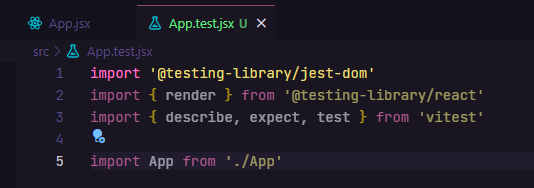
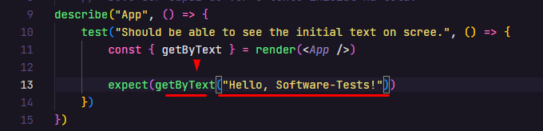
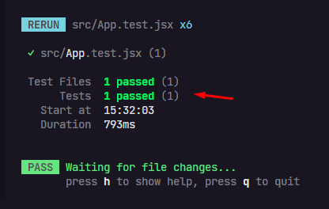

Criar arquivo de testes com o mesmo nome do componente (App.jsx -> App.test.jsx):
OBS: Lembrar de sempre importar o jest-dom do TestingLibrary pros métodos do TestingLibrary ficarem disponíveis no arquivo atual.
OBS: Lembrar de importar o Render do TestingLibrary/React. Ele renderiza os componentes.
Dentro do Vitest, precisamos importar alguns componentes: { describe, expect, test }.
{ describe } >>> Descreve qual que é o teste, o que ele vai fazer.
{ expect } >>> Diz o que o teste espera que aconteça.
{ test } >>> É o teste em si.
Importar o componente que vai ser testado dentro do arquivo de testes:
Descrevendo qual é o teste (testando algo relacionado ao App.jsx).
A função Describe() recebe dois parâmetros iniciais, uma String descrevendo qual componente está sendo testado + uma Arrow Function.
OBS: Dentro dessa função 'Describe()' vai ser montada a 'Switch de Testes' (before.each, after.each, test()). Nesse caso, dentro da Arrow Function do Describe().
Definir o objetivo do teste e dar um bom texto para ele. Por convenção, o texto do teste é escrito em Inglês.
Depois do texto do teste, vem uma Arrow Function.
Garantindo que a aplicação está sendo renderizada à partir da lógica de que o app esteja mostrando um texto inicial na tela.
Estruturar a função 'render()' do Vitest.
Passar para dentro da função 'render()' do Vitest, o componente que deve ser testado (<App />).
Passar para dentro do 'const' um 'debug' e chamar essa função logo abaixo do const.
>>> npm run test
Ele printa a estrutura HTML do componente dentro do terminal.
OBS: O debug() serve apenas para mostrar a ação no terimal.
Tornar o teste mais coeso.
- Pegar o elemento pelo texto.
- Esperando que...
- Chamar a função getByText() e passar por parâmetro pra dentro dela o texto que quiser capturar da aplicação.
- Seja... (Nesse caso: - "Esteja dentro do documento...")
Só rodar o teste que ele vai passar.
OBS: Vale fazer alterações no texto e testar se o teste realmente passou ou não.